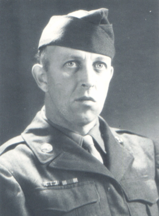

Guy H. Wogsland
19?? - ?

Guy in Paris - 1945.
Guy H. Wogsland was the third son born to Carl and Anne Wogsland. He served in the army during WWII. He never married.
Parents:
Anne Amundson
1879 - 1953
Carl Oscar Wogsland
1870 - 1946
Offspring:
NONE
References:
1. Neal Wogsland
2. Barb Wogsland
Last changed on 2 August 2004 by
Bradley James Wogsland
.